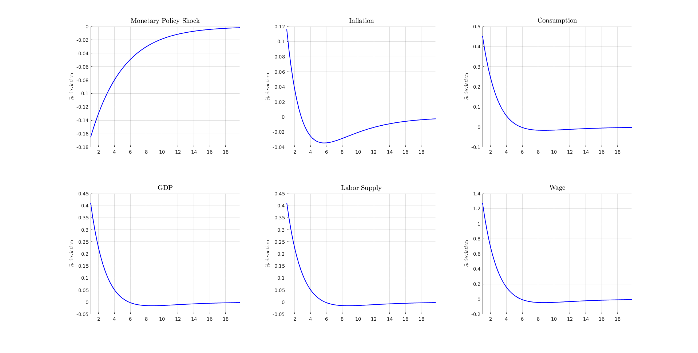
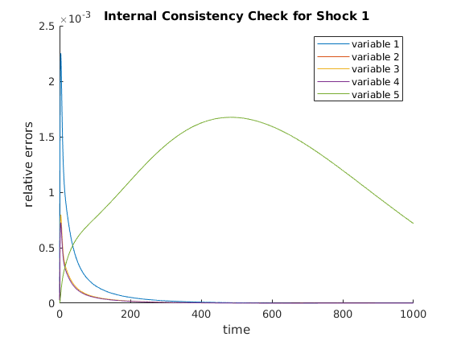
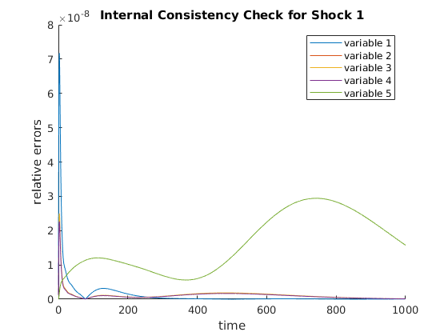
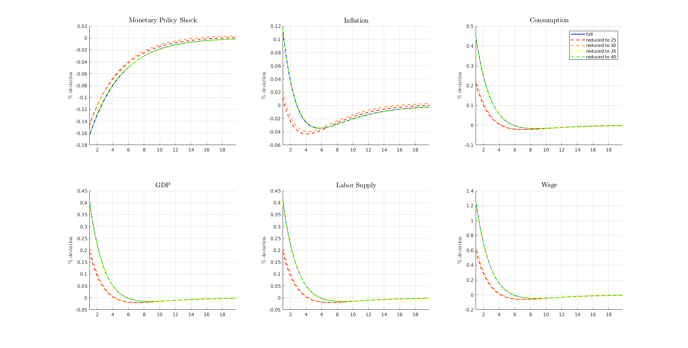

One-Asset HANK model
This program solves one-asset HANK model using the pertrubation method outlined in Ahn et al. (2017). The model setup is explained in more detail in the documentation file provided at </examples/one_asset_HANK/docs/one_asset_HANK.pdf> .
The solution will also follow the standard steps
- Solve the steady-state problem
- Linearize Model Equations
- Solve out Static Constraints or Reduce Dimensionality
- Solve Linear System
- Compute Impulse Response Functions
- Internal Consistency Check
Estimated Runtime: 1 ~ 2 seconds per solution This web run solves it 5 times run time depends heavily on internal consistency check that only needs to be run once afterward
REFERENCES:
- Ahn, SeHyoun, et al. "When Inequality Matters for Macro and Macro Matters for Inequality." NBER Macroeconomics Annual 2017, volume 32. University of Chicago Press, 2017.
- Kaplan, Greg, Benjamin Moll, and Giovanni L. Violante. Monetary policy according to HANK. No. w21897. National Bureau of Economic Research, 2016.
REQUIRES:
- auto diff toolbox: <https://github.com/sehyoun/MATLABAutoDiff>
- phact toolbox: <https://github.com/gregkaplan/phact>
- <compute_steady_state.m>
- <equilibrium_conditions.m>
- <set_parameters.m>
- <plot_IRFs.m>
Contents
- Initialization
- Step 0: Set parameters
- Step 1: Solve for the Steady State
- Step 2: Linearize Model Equations
- Step 3: Solve out Static Constraints or Reduce the Model
- Step 4: Solve Linear Systems
- Step 5: Simulate Impulse Response Functions
- (optional) Step 7: Plot relevant IRFs
- Step 3: Reduce the Model
- Step 4: Solve Linear Systems
- Step 5: Simulate Impulse Response Functions
- Step 6: Internal Consistency Check
- (optional) Step 7: Plot relevant IRFs
- Repeatly Solve the Reduced Model 3 more times with different Krylov order
Initialization
Setup the toolbox Need to include folders containing the files
addpath('/home/sehyoun/Dropbox/1Packages/PHACT'); addpath('/home/sehyoun/Dropbox/1Packages/AutoDiff'); % Turn off the warning message from auto diff % You should read the warning once, but turn it off after reading it. warning('off','AutoDiff:maxmin');
Set options for this example run
ReduceDistribution = 1; % 1 for state space reduction 0 for not reduceV = 1; % 1 for value function reduction 0 for not ReduceDist_hors = [25,30,35,40]; % Dimensionality of the Krylov subspace DisplayLev = 1; % Determines verbosity of steady state calculation check_consistency = 1; % Runs Step 6: Internal consistency check
Step 0: Set parameters
Run script to setup parameters Economic parameters, approximation parameters, and grid parameters are defined in the script.
set_parameters; n_v = I*J + 1; % number of choice/jump variables (value function + inflation) n_g = I*J; % number of state variables (distribution + monetary policy) n_p = 5; % number of static relations (includes observables) n_shocks = 1; % only monetary policy shock is considered nEErrors = n_v; nVars = n_v + n_g + n_p;
Step 1: Solve for the Steady State
Any methods can be used to solved for the steady state. In particular, example codes can be found at <http://www.princeton.edu/~moll/HACTproject.html>.
fprintf('Computing steady state...\n'); t0 = tic; compute_steady_state; fprintf('Time to compute steady state: %2.4f seconds\n\n\n',toc(t0));
Computing steady state... Discount rate: 0.02, Excess Demand: -5.7787 Discount rate: 0.0125, Excess Demand: -5.4142 Discount rate: 0.00875, Excess Demand: -4.8266 Discount rate: 0.006875, Excess Demand: -4.0908 Discount rate: 0.0059375, Excess Demand: -3.1858 Discount rate: 0.0054687, Excess Demand: -2.0309 Discount rate: 0.0052344, Excess Demand: -0.57438 Discount rate: 0.0051172, Excess Supply: 1.3215 Discount rate: 0.0051758, Excess Supply: 0.14704 Discount rate: 0.0052051, Excess Demand: -0.24977 Discount rate: 0.0051904, Excess Demand: -0.061274 Discount rate: 0.0051831, Excess Supply: 0.040435 Discount rate: 0.0051868, Excess Demand: -0.011263 Discount rate: 0.0051849, Excess Supply: 0.014417 Discount rate: 0.0051859, Excess Supply: 0.0015324 Discount rate: 0.0051863, Excess Demand: -0.0048544 Discount rate: 0.0051861, Excess Demand: -0.0016539 Discount rate: 0.005186, Excess Demand: -5.6366e-05 Discount rate: 0.0051859, Excess Supply: 0.0007432 Discount rate: 0.0051859, Excess Supply: 0.0003423 Discount rate: 0.005186, Excess Supply: 0.00014249 Discount rate: 0.005186, Excess Supply: 4.2562e-05 Steady State Found, Interest rate = 0.005, Discount rate = 0.005186 Time to compute steady state: 0.4049 seconds
Step 2: Linearize Model Equations
For computing derivatives, the codes written for solving for the steady-state can be used almost verbatim using automatic differentiation toolbox as long as only the functions supported by automatic differentation are used. For list of supported functions and documentation of relevant syntax check <https://github.com/sehyoun/MATLABAutoDiff>. Example usage/syntax of automatic differentiation can be found at <https://sehyoun.com/EXAMPLE_AutoDiff_Syntax.html>.
fprintf('Taking derivatives of equilibrium conditions...\n'); t0 = tic; % Prepare automatic differentiation vars = zeros(nVars + nVars + nEErrors + n_shocks,1); vars = myAD(vars); % Evaluate derivatives equilibrium_conditions; % Extract derivative values derivs = getderivs(v_residual); t_derivs = toc(t0); fprintf('Time to compute derivatives: %2.4f seconds\n\n\n',t_derivs); if t_derivs> 1 warning('If you do not compile mex/C files for the automatic differentiation, matrix vector multiplication will be slow'); disp('Press any key to continue...'); pause(); end
Taking derivatives of equilibrium conditions... Time to compute derivatives: 0.1139 seconds
Step 3: Solve out Static Constraints or Reduce the Model
Extract derivatives
g1 = -derivs(:,1:nVars); g0 = derivs(:,nVars+1:2*nVars); pi = -derivs(:,2*nVars+1:2*nVars+nEErrors); psi = -derivs(:,2*nVars+nEErrors+1:2*nVars+nEErrors+n_shocks); constant = sparse(nVars,1); % Solve out static constraints fprintf('Solving Out Static Constraints ...\n'); [state_red,inv_state_red,g0,g1,constant,pi,psi] = clean_G0_sparse(g0,g1,constant,pi,psi); n_g_red = n_g; % Create identity matrix for code reuse below from_spline = speye(n_g_red + n_v); to_spline = speye(n_g_red + n_v); n_splined = n_v;
Solving Out Static Constraints ...
Step 4: Solve Linear Systems
t0 = tic; fprintf('Solving linear system...\n'); % Note parts of schur_solver will be swapped out in the % near future, so it might have a different interface. Since the codebase is % new, there will be interative updates to simplify interface and syntax. % Underlying math will stay the same, but interfact may change with updates, % so one should note the release number of the codebase one is using. [G1, ~, impact, eu, F] = schur_solver(g0,g1,c,psi,pi,1,1,1,n_splined); fprintf('...Done!\n') fprintf('Existence and uniqueness? %2.0f and %2.0f\n',eu); fprintf('Time to solve linear system: %2.4f seconds\n\n\n',toc(t0));
Solving linear system... ...Done! Existence and uniqueness? 1 and 1 Time to solve linear system: 0.0390 seconds
Step 5: Simulate Impulse Response Functions
fprintf('Simulating Model...\n'); t0 = tic; T = 100; N = 400; dt = T/N; vAggregateShock = zeros(1,N); vAggregateShock(1) = -1/sqrt(dt); trans_mat = inv_state_red*from_spline; [simulated,vTime] = simulate(G1,impact,T,N,vAggregateShock,'implicit',trans_mat,[n_v,n_v+n_g:n_v+n_g+5]); fprintf('...Done!\n'); fprintf('Time to simulate model: %2.4f seconds\n\n\n',toc(t0)); % Define variables to be plotted below inflation = simulated(1,:)'; monetary_shock = simulated(2,:)'; consumption = (simulated(4,:)')/vars_SS(n_v+n_g+3); Y = (simulated(6,:)')/vars_SS(n_v+n_g+4); lab_sup = (simulated(4,:)')/vars_SS(n_v+n_g+2); wage = simulated(3,:)'/vars_SS(n_v+n_g+1);
Simulating Model... ...Done! Time to simulate model: 0.0121 seconds
(optional) Step 7: Plot relevant IRFs
fig = figure('units','normalized','outerposition',[0 0 1 1]); line_style = '-'; color = 'blue'; plot_IRFs;
Step 3: Reduce the Model
Now, the model will be solved again using model reduction (4 times) However, the code steps through similar steps as above except with reduction.
ReduceDist_hor = ReduceDist_hors(1); fprintf('\n\nReduction horizon %d\n',ReduceDist_hor); g1 = -derivs(:,1:nVars); g0 = derivs(:,nVars+1:2*nVars); pi = -derivs(:,2*nVars+1:2*nVars+nEErrors); psi = -derivs(:,2*nVars+nEErrors+1:2*nVars+nEErrors+n_shocks); constant = sparse(nVars,1); % State Variables % Reduce model fprintf('Reducing distribution ...\n'); [state_red,inv_state_red,n_g_red] = krylov_reduction(g0,g1,n_v,n_g,ReduceDist_hor); [g1,psi,pi,constant,g0] = change_basis(state_red,inv_state_red,g1,psi,pi,constant,g0); fprintf('Reduced to %d from %d.\n',n_g_red,n_g); % Jump Variables % Reduce dimensionality of value function using splines n_knots = 15; c_power = 1; x = a'; n_post = size(z,2); n_prior = 1; % Create knot points for spline (the knot points are not uniformly spaced) knots = linspace(amin,amax,n_knots-1)'; knots = (amax-amin)/(2^c_power-1)*((knots-amin)/(amax-amin)+1).^c_power+ amin-(amax-amin)/(2^c_power-1); % Function calls to create basis reduction [from_spline, to_spline] = oneDquad_spline(x,knots); [from_spline, to_spline] = extend_to_nd(from_spline,to_spline,n_prior,n_post); from_spline(end+1,end+1) = 1; to_spline(end+1,end+1) = 1; n_splined = size(from_spline,2); [from_spline, to_spline] = projection_for_subset(from_spline,to_spline,0,n_g_red); % Reduce the decision vector [g1,psi,~,constant,g0] = change_basis(to_spline,from_spline,g1,psi,pi,constant,g0); pi = to_spline * pi * from_spline(1:n_v,1:n_splined);
Reduction horizon 25 Reducing distribution ... Reduced to 50 from 100.
Step 4: Solve Linear Systems
t0 = tic; fprintf('Solving linear system...\n'); % Note parts of schur_solver will be swapped out in the % near future, so it might have a different interface. Since the codebase is % new, there will be interative updates to simplify interface and syntax. % Underlying math will stay the same, but interfact may change with updates, % so one should note the release number of the codebase one is using. [G1, ~, impact, eu, F] = schur_solver(g0,g1,c,psi,pi,1,1,1,n_splined); fprintf('...Done!\n') fprintf('Existence and uniqueness? %2.0f and %2.0f\n',eu); fprintf('Time to solve linear system: %2.4f seconds\n\n\n',toc(t0));
Solving linear system... Warning: <schur_solver>: There are less than n_v number of positive eigenvalues: -0.0012 ...Done! Existence and uniqueness? 1 and 1 Time to solve linear system: 0.0050 seconds
Step 5: Simulate Impulse Response Functions
fprintf('Simulating Model...\n'); t0 = tic; T = 100; N = 400; dt = T/N; vAggregateShock = zeros(1,N); vAggregateShock(1) = -1/sqrt(dt); trans_mat = inv_state_red*from_spline; [simulated,vTime] = simulate(G1,impact,T,N,vAggregateShock,'implicit',trans_mat,[n_v,n_v+n_g:n_v+n_g+5]); fprintf('...Done!\n'); fprintf('Time to simulate model: %2.4f seconds\n\n\n',toc(t0)); % Define variables to be plotted below inflation = simulated(1,:)'; monetary_shock = simulated(2,:)'; consumption = (simulated(4,:)')/vars_SS(n_v+n_g+3); Y = (simulated(6,:)')/vars_SS(n_v+n_g+4); lab_sup = (simulated(4,:)')/vars_SS(n_v+n_g+2); wage = simulated(3,:)'/vars_SS(n_v+n_g+1);
Simulating Model... ...Done! Time to simulate model: 0.0062 seconds
Step 6: Internal Consistency Check
A different internal consistency check will be implemented and updated in the future. This function should only be taken as a sanity check.
g1 = -derivs(:,1:nVars); psi = -derivs(:,2*nVars+nEErrors+1:2*nVars+nEErrors+n_shocks); from_red = inv_state_red * from_spline; to_red = to_spline * state_red; [epsilon] = internal_consistency_check(G1,impact,n_g_red,from_red,to_red,g1,psi,F,n_v,n_g,1000,vars_SS,1,0.07);
<check_internal>: Estimated simulation time is 0.402892 minutes <internal_consistency_check>: The maximum relative error is 2.251858e-03
(optional) Step 7: Plot relevant IRFs
figure(fig); line_style = '--'; color = 'red'; plot_IRFs;
Repeatly Solve the Reduced Model 3 more times with different Krylov order
Above codes are delegated to <solve_reduced_model> script for cleanliness.
ReduceDist_hor = ReduceDist_hors(2); fprintf('\n\nReduction horizon %d\n',ReduceDist_hor); color = [1,0.5,0]; solve_reduced_model; ReduceDist_hor = ReduceDist_hors(3); fprintf('\n\nReduction horizon %d\n',ReduceDist_hor); color = 'yellow'; solve_reduced_model; ReduceDist_hor = ReduceDist_hors(4); fprintf('\n\nReduction horizon %d\n',ReduceDist_hor); color = 'green'; solve_reduced_model; legends = cell(5,1); legends{1} = 'full'; legends{2} = ['reduced to ',num2str(ReduceDist_hors(1))]; legends{3} = ['reduced to ',num2str(ReduceDist_hors(2))]; legends{4} = ['reduced to ',num2str(ReduceDist_hors(3))]; legends{5} = ['reduced to ',num2str(ReduceDist_hors(4))]; figure(fig); subplot(2,3,3); legend(legends{:});
Reduction horizon 30 Reducing distribution ... Reduced to 60 from 100. Solving linear system... Warning: <schur_solver>: There are less than n_v number of positive eigenvalues: -4.4176e-04 ...Done! Existence and uniqueness? 1 and 1 Time to solve linear system: 0.0064 seconds Simulating Model... ...Done! Time to simulate model: 0.0069 seconds <check_internal>: Estimated simulation time is 0.398945 minutes <internal_consistency_check>: The maximum relative error is 2.667717e-03 Reduction horizon 35 Reducing distribution ... Reduced to 70 from 100. Solving linear system... ...Done! Existence and uniqueness? 1 and 1 Time to solve linear system: 0.0091 seconds Simulating Model... ...Done! Time to simulate model: 0.0076 seconds <check_internal>: Estimated simulation time is 0.506851 minutes <internal_consistency_check>: The maximum relative error is 1.528743e-03 Reduction horizon 40 Reducing distribution ... Reduced to 80 from 100. Solving linear system... ...Done! Existence and uniqueness? 1 and 1 Time to solve linear system: 0.0076 seconds Simulating Model... ...Done! Time to simulate model: 0.0068 seconds <check_internal>: Estimated simulation time is 0.400918 minutes <internal_consistency_check>: The maximum relative error is 7.174923e-08 
SYSTEM INFORMATION FOR REPLICATION Computer: Version: ThinkPad P50 CPU: Version: Intel(R) Xeon(R) CPU E3-1505M v5 @ 2.80GHz Memory: Number Of Devices: 4 Memory Device Size: 16384 MB Type: DDR4 Speed: 2133 MHz Configured Clock Speed: 2133 MHz Memory Device Size: 16384 MB Type: DDR4 Speed: 2133 MHz Configured Clock Speed: 2133 MHz Memory Device Size: 16384 MB Type: DDR4 Speed: 2133 MHz Configured Clock Speed: 2133 MHz Memory Device Size: 16384 MB Type: DDR4 Speed: 2133 MHz Configured Clock Speed: 2133 MHz OS: Description: Linux Mint 18.1 Serena MATLAB: 9.2.0.556344 (R2017a)